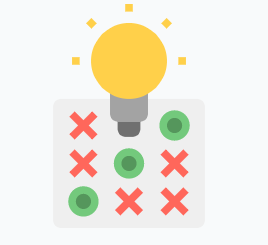

<link rel="stylesheet" href="https://cdnjs.cloudflare.com/ajax/libs/font-awesome/4.7.0/css/font-awesome.min.css">
<ion-header>
    <ion-toolbar>
        <ion-buttons slot="start">
            <ion-menu-button autoHide="false"  [routerLink]="['/cliente']"></ion-menu-button>
        </ion-buttons>
        <ion-avatar size="small" slot="start">
            
        </ion-avatar>
        <ion-title>TA-TE-TI</ion-title>
    </ion-toolbar>
</ion-header>
<!-- Page Content -->

<ion-content>

    <div class="container" style="padding: 5%;">
        <div class="row">
            <div class="row justify-content-md-center">
                <div style="text-align: center" class="col-12">

                    <button mat-raised-button style="width: 23%;" (click)="presion(0,0)"
                        class="casilla">{{posiciones[0][0]}}</button>
                    <button mat-raised-button style="width: 23%;" (click)="presion(0,1)"
                        class="casilla">{{posiciones[0][1]}}</button>
                    <button mat-raised-button style="width: 23%;" (click)="presion(0,2)"
                        class="casilla">{{posiciones[0][2]}}</button>
                    <br>
                    <button mat-raised-button style="width: 23%;" (click)="presion(1,0)"
                        class="casilla">{{posiciones[1][0]}}</button>
                    <button mat-raised-button style="width: 23%;" (click)="presion(1,1)"
                        class="casilla">{{posiciones[1][1]}}</button>
                    <button mat-raised-button style="width: 23%;" (click)="presion(1,2)"
                        class="casilla">{{posiciones[1][2]}}</button>
                    <br>
                    <button mat-raised-button style="width: 23%;" (click)="presion(2,0)"
                        class="casilla">{{posiciones[2][0]}}</button>
                    <button mat-raised-button style="width: 23%;" (click)="presion(2,1)"
                        class="casilla">{{posiciones[2][1]}}</button>
                    <button mat-raised-button style="width: 23%;" (click)="presion(2,2)"
                        class="casilla">{{posiciones[2][2]}}</button>
                </div>

            </div>
        </div>
        <div class="row">
            
                <div style="text-align: center" class="col-12">
                        <button class="btn btn-primary" (click)="nuevoJugada()">Reiniciar Juego</button>
                    </div>
        </div>


    </div>

</ion-content>

